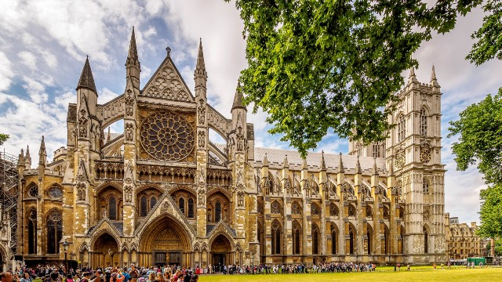

London attractions

London, the capital of England and the United
Kingdom, is a 21st-century city with history
stretching back to Roman times.
At its centre stand the imposg Houses of Parliament,
the iconic ‘Big Ben’ clock tower and Westminster Abbey, site of British monarch coronations.
Across the Thames River, the London Eye observation wheel provides panoramic views of
the South Bank cultural complex, and the entire city.
Best 5 London Attractions
- The London Eye
- The Tower of London
- Westminister Abbey
- Buckingham Palace
- Sea Life London
A trip to the capital wouldn't be complete without seeing the top 5 attractions in London.
Plan ahead so you don't miss out on these top things to do in London.
From the modern London Eye to the historic Tower of London, the top 5 tourist attractions in London are a must-see on any London sightseeing trip.
Even better, many London landmarks are free to visit. Use the London attractions map to find them all.
There are also plenty of kid-friendly places to visit in London.
Get up close and personal with underwater creatures at SEA LIFE London Aquarium or explore the Science Museum, London's interactive hub of science and technology.
Both are perfect for fun family days out in London.
You could also soak up some culture at London museums, visit Buckingham Palace, or take the perfect picture with Big Ben, just some of the many iconic places to go in London.

Enjoy amazing 360-degree views over London from the lastminute.com London Eye -
the world’s tallest cantilevered observation wheel.
The London Eye has 32 pods, each representing one of London’s 32 boroughs and it is the perfect
way to reconnect with and experience the beautiful city of London.

The Tower of London, officially His Majesty's Royal Palace and Fortress of the Tower of London, is a historic castle on the North bank of the River Thames in Central London, England.
This historic castle with over 1,000 years of history is home to the Crown Jewels, the iconic 'Beefeater' Yeoman Warders, and the legendary ravens that have kept the kingdom from collapsing. Inside the White Tower, the oldest building of the castle, is an 11th-century chapel and historic Royal Armouries collections.

Marvel at the incredible architecture of Westminster Abbey, an active place of worship
and UNESCO World Heritage Site in London.
Founded by Benedictine monks in 960 AD, the abbey is Britain's coronation church and the
setting for many special ceremonies, including the wedding of Prince William and Kate Middleton
in 2011.

Buckingham Palace is one of the few working royal palaces remaining in the world today.

Explore the marine world at SEA LIFE London Aquarium on London's South Bank.
During your visit you'll stroll underneath the sea in the glass Ocean Tunnel; take a trip to Seahorse Kingdom; spot piranhas and crocodiles
in the Rainforest Adventure and test your nerves on the Shark Walk as sharks swim beneath you.
Other creatures you'll meet include
- Penguins
- Clownfish
- Rays
- Jellyfish
- Starfish